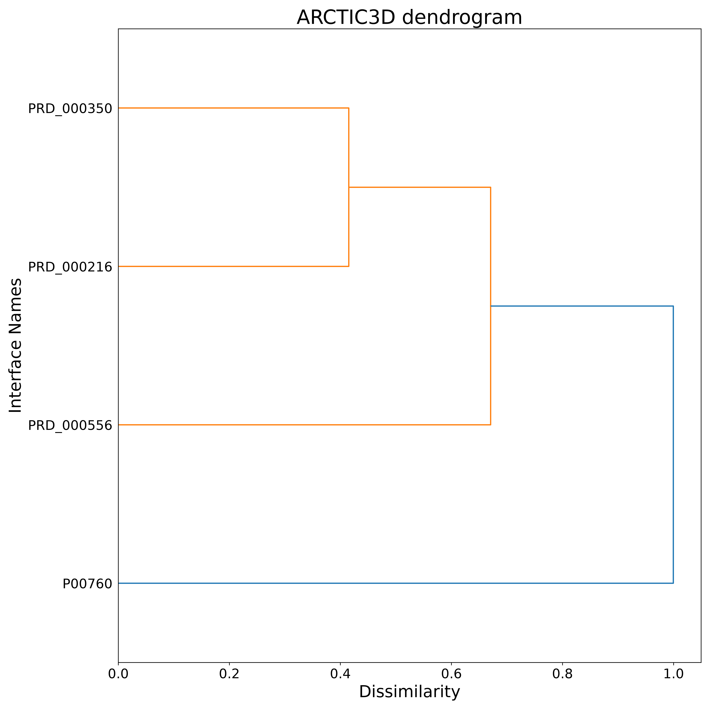

Target: custom; structure: input_data/1ppe_E.pdb; 4 interfaces retrieved, 4 clustered in 2 binding surfaces.
Download: arctic3d.log input_data/1ppe_E.pdb retrieved_interfaces.out interface_matrix.txt clustered_interfaces.out clustered_residues.out clustered_residues_probs.out 1ppe_E_cl1.pdb 1ppe_E_cl2.pdb dendrogram_average.png sequence_probability.html
The browser does not let a page opened from disk load
the files of the viewer. Serve this directory with
python -m http.server -d <directory> and open
http://localhost:8000/report.html.
Click a column header to sort a table by that column; click again to reverse the order.
| Cluster | N interfaces | N residues | Top residues | Interfaces |
|---|---|---|---|---|
| 1 | 3 | 9 | ASP191 (1.00), GLY211 (1.00), GLY188 (0.67), GLY189 (0.67), LEU209 (0.67), HIS57 (0.33), SER192 (0.33), GLN194 (0.33), VAL213 (0.33) | PRD_000216, PRD_000350, PRD_000556 |
| 2 | 1 | 16 | GLY19 (1.00), GLY38 (1.00), GLN64 (1.00), ARG66 (1.00), VAL75 (1.00), ILE83 (1.00), TYR94 (1.00), SER96 (1.00), TRP141 (1.00), GLY142 (1.00) | P00760 |
| Residue | Name | Cluster 1 | Cluster 2 |
|---|---|---|---|
| 19 | GLY | 0.000 | 1.000 |
| 38 | GLY | 0.000 | 1.000 |
| 57 | HIS | 0.333 | 0.000 |
| 64 | GLN | 0.000 | 1.000 |
| 66 | ARG | 0.000 | 1.000 |
| 75 | VAL | 0.000 | 1.000 |
| 83 | ILE | 0.000 | 1.000 |
| 94 | TYR | 0.000 | 1.000 |
| 96 | SER | 0.000 | 1.000 |
| 141 | TRP | 0.000 | 1.000 |
| 142 | GLY | 0.000 | 1.000 |
| 144 | THR | 0.000 | 1.000 |
| 147 | SER | 0.000 | 1.000 |
| 170 | SER | 0.000 | 1.000 |
| 171 | ALA | 0.000 | 1.000 |
| 184 | GLY | 0.000 | 1.000 |
| 188 | GLY | 0.667 | 0.000 |
| 189 | GLY | 0.667 | 0.000 |
| 191 | ASP | 1.000 | 0.000 |
| 192 | SER | 0.333 | 0.000 |
| 194 | GLN | 0.333 | 0.000 |
| 209 | LEU | 0.667 | 0.000 |
| 211 | GLY | 1.000 | 0.000 |
| 213 | VAL | 0.333 | 0.000 |
| 217 | SER | 0.000 | 1.000 |
| Interface | Residues | Cluster |
|---|---|---|
| PRD_000216 | 7 | 1 |
| PRD_000350 | 7 | 1 |
| PRD_000556 | 2 | 1 |
| P00760 | 16 | 2 |
